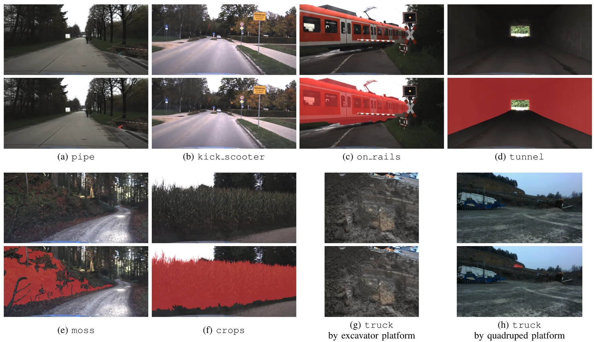
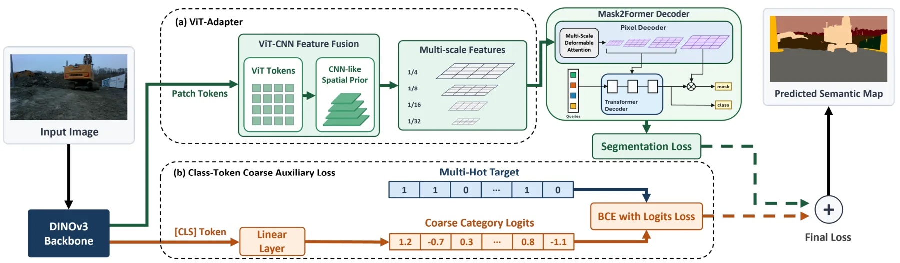
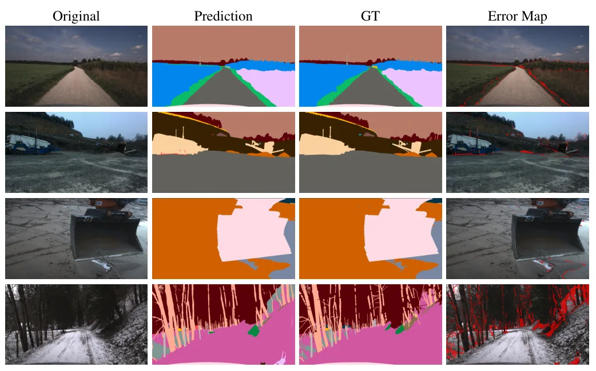
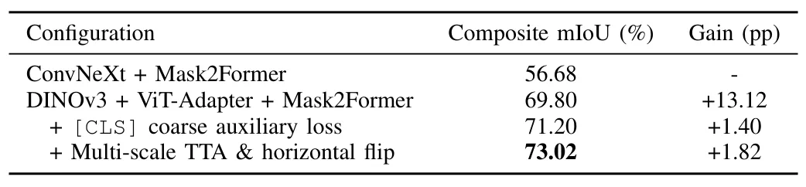
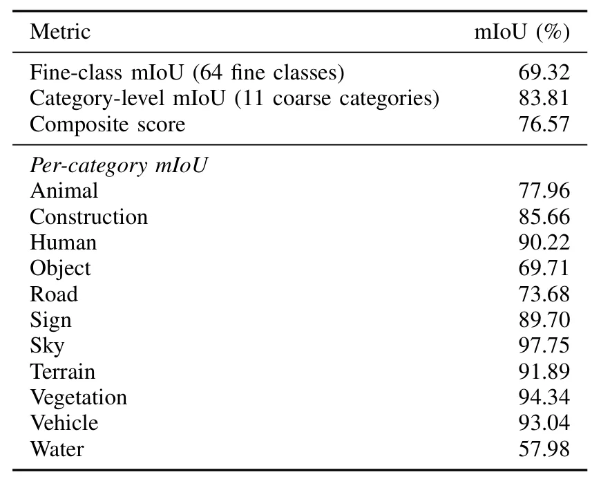

ICRA 2026 GOOSE 细粒度语义分割挑战技术报告：用 DINOv3 增强野外机器人户外场景理解Technical Report for ICRA 2026 GOOSE 2D Fine-Grained Semantic Segmentation Challenge: Leveraging DINOv3 for Robust Outdoor Scene Understanding in Field Robotics
与野外/越野机器人语义理解和语义地图前端相关，但不是 SLAM 后端；适合作为 field robotics perception 方案跟踪。
一句话工作总结
该技术报告用 DINOv3 + ViT-Adapter + Mask2Former 和 TTA/ensemble 获得 GOOSE 野外机器人语义分割挑战第一名。
摘要
GOOSE 2D Fine-Grained Semantic Segmentation Challenge 是 ICRA 2026 Field Robotics Workshop 上的越野图像稠密语义分割挑战，使用 64 个细粒度类别和 11 个非 void 粗类别进行评测。本文给出第一名方案：网络层面结合自监督 DINOv3 ViT-L/16 backbone、ViT-Adapter 和 Mask2Former mask-classification decoder，并对全局 CLS token 加入 coarse-category auxiliary loss；推理层面采用 multi-scale 与 horizontal-flip test-time augmentation，并集成 Codabench 分数最高的三个 checkpoints。方法官方 composite score 为 76.57%，其中 fine-class mIoU 为 69.32%，category-level mIoU 为 83.81%，在最终阶段排行榜第一。
The GOOSE 2D Fine-Grained Semantic Segmentation Challenge at the ICRA 2026 Workshop on Field Robotics evaluates dense semantic segmentation of off-road imagery over a fine-grained taxonomy of 64 classes and 11 evaluated non-void coarse categories. We present the first-place solution to this challenge. Our solution comprises two complementary improvements: (a) a network-level design that combines a self-supervised DINOv3 ViT-L/16 backbone, a ViT-Adapter, and a Mask2Former mask-classification decoder, together with a coarse-category auxiliary loss on the global [CLS] token; and (b) an inference-time aggregation strategy based on multi-scale and horizontal-flip test-time augmentation and an ensemble of the top three checkpoints selected using Codabench scores. Our method achieves an official composite score of 76.57%, consisting of 69.32% fine-class mIoU and 83.81% category-level mIoU, and ranks first on the final phase leaderboard: www.codabench.org/competitions/14257/#/results-tab.
中文解读摘录
- 链接：abs / PDF；作者：Jaeil Park, Hyobin Choi, Sangjin Lee, Hyungtae Lim, Sung-Hoon Yoon；类别：cs.CV, cs.RO, eess.IV；采集 score=6。
- 核心思路：ICRA 2026 Field Robotics Workshop 的 GOOSE 2D 细粒度语义分割挑战第一名方案，使用 DINOv3 ViT-L/16 backbone、ViT-Adapter、Mask2Former mask-classification decoder，并加入 coarse-category auxiliary loss。
- 方法要点：推理时使用 multi-scale、horizontal-flip TTA 和 top-3 checkpoints ensemble；官方 composite score 76.57%，fine-class mIoU 69.32%，category-level mIoU 83.81%。
- 关注点：对越野/野外机器人语义地图、可通行区域理解和鲁棒场景理解有参考价值；需注意它是 2D 分割挑战方案，不直接提供定位/建图后端。
图表/页面预览

{kind=link}

{kind=link}

{kind=link}

{kind=link}

{kind=link}
